Star of Astaroth/Mer Ka Ba Meditation
by
Azazel and Thoth
Sit comfortably, preferably cross-legged, but sitting in a chair is fine as long as your spine is straight. Go into a trance state. You should take a couple of minutes to clean your aura before beginning this exercise. The meditation is performed in 18 breaths. Click Here for information about this meditation.
PLEASE NOTE: THIS MEDITATION HAS BEEN UPDATED 10/15/12. THE MOST POWERFUL CHAKRA IS THE 3RD [SOLAR, 666, SUN] CHAKRA, NOT THE HEART CHAKRA. THE SPHERE SHOULD BE MOVED TO THE SOLAR CHAKRA, NOT THE HEART CHAKRA, AS WAS IN THE FORMER MEDITATION FOR STEP 14.
FOR MORE INFORMATION ABOUT THIS, PLEASE CLICK HERE
| 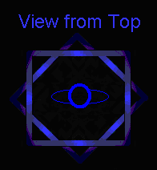
| Visualize yourself inside of two pyramids. The standard meditation is done with white-gold energy inside of the pyramids, but you can change colors as you become more experienced and know how to handle color energy. White-gold energy is the most powerful energy.¹
| 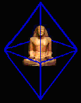
|
1.
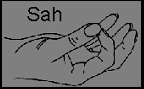
| With your thumbs touching your index fingers, inhale to the count of 6;
Hold for 6
Exhale for 6, and chant either aloud or silently in your head:
S-S-S-S-A-A-A-H-H-H-H; in one long exhale while visualizing both your pyramids filling with a brilliant white-gold light.
| 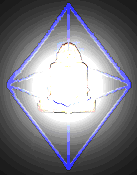
|
2.
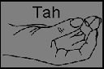
| With your thumbs touching your middle fingers, inhale to the count of 6;
Hold for 6
Exhale for 6, and chant either aloud or in your head: T-T-T-T-A-A-A-H-H-H-H; in one long exhale. Continue to fill the pyramids with bright intense and powerful energy.
| 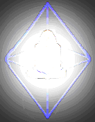
|
3.

| With your thumbs touching your ring fingers, inhale to the count of 6;
Hold for 6
Exhale for 6, and chant either aloud or in your head: N-N-N-N-A-A-A-H-H-H-H; in one long exhale. Continue to fill the pyramids with bright intense and powerful energy.
|
|
4.

| With your thumbs touching your little fingers, inhale to the count of 6;
Hold for 6
Exhale for 6, and hiss [one long "S" sound for the exhale]:
S-S-S-S-S-S-S-S-S-S-S; in one long exhale. Continue to fill the pyramids with bright intense and powerful energy.
| 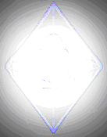
|
5.
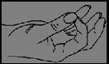
| Again, with your thumbs touching your index fingers, inhale to the count of 6;
Hold for 6
Exhale for 6, while visualizing both your pyramids filling with a brilliant white-gold light.
There is no need to chant for this step.
|
|
6.
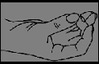
| With your thumbs touching your middle fingers, inhale to the count of 6;
Hold for 6
Exhale for 6, while visualizing both your pyramids filling with a brilliant white-gold light.
There is no need to chant for this step.
|
|
From now on, with each and every breath throughout the meditation, you will draw in and visualize energy entering through both ends of the breathing tube at the same time.
The breathing tube extends for one hand length [measured by the length of your own hand] beyond the top of your head, down through your seven chakras and ends one hand length past your base chakra located at the end of your tailbone. When you are standing, it extends one hand length beyond your feet.
Your tube is as large around as the circle made when you touch your thumb to your middle finger and tapers to a small opening at each end. The tube is transparent like glass.
The next three illustrations below are without the pyramid for clarity. [You should always visualize yourself inside of the pyramid throughout the entire exercise]. | 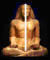 |
7.
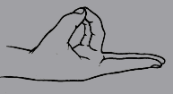
| With your thumbs touching your ring and little fingers, index and middle extended as in the illustration to the left, inhale and breathe in energy to the count of 6, visualizing brilliant white-gold light entering the tube from both ends at the same time to meet between your 2nd and 3rd chakras.
Hold for 6.
The light forms a sphere the size of a grapefruit.
Exhale for 6 and visualize the sphere brightening with energy.
| 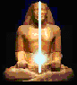
|
8.
| Keep your thumbs touching your ring and little fingers, index and middle extended as in the illustration to the left, inhale and breathe in energy to the count of 6, visualize the sphere growing in size until it reaches the base of your rib cage and the top of your pubic bone.
Hold for 6.
Exhale for 6 and visualize the sphere brightening with intensity.
| 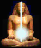
|
9.
|
Continue to keep your thumbs touching your ring and little fingers, with your index and middle extended as in the illustration to the left. Inhale and breathe in energy to the count of 6, Visualize the sphere brightening and growing in concentrated power
Hold for 6, visualizing and feeling the brightness, intensity and power of the sphere.
Exhale for 6, visualizing the sphere grow brighter and brighter, and more and more powerful.
|
|
10.
|
Keep your hands in the position shown in the illustration to the left, inhale and breathe in energy to the count of 6,
The sphere is reaching maximum concentration, it ignites, changing color to a white/electric blue flame and turns into a brilliant shining gold like that of the Sun.
Round you lips to blow
Blow on the exhale for a count of six. As you blow, visualize the sphere expanding to surround your entire body.
The smaller sphere still remains, and is more concentrated and brighter than the larger one.
[Visualize yourself like you are blowing up the sphere].
| 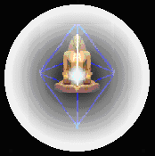
|
11.
| Keep your hands in the position shown in the illustration to the left, inhale and breathe in energy to the count of 6, Visualize and feel the energy entering your breathing tube at both ends and concentrating in the smaller sphere and expanding out into the larger sphere.
Hold for 6.
Exhale for 6 and visualize the concentrated energy continuing to expand into the larger sphere making it brighter and more powerful.
At this step, you will more than likely see the smaller sphere beginning to spin. It can spin either way. Visualize the spinning and go with the flow. | 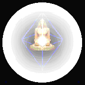
|
Steps 12. and 13. are the same as step 11.
[Continue to spin the sphere]
14.
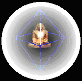
| For men, place your left palm on top of your right palm, both facing up. For women, place your right palm on top of your left, both facing up.
At the beginning of your inhale, move the smaller sphere up to your 3rd [SOLAR 666] chakra. Inhale for a count of six.
With experience, you can move the ball to any chakra of your choice. [See illustration to the right].
| 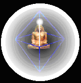 |
| 15.
|
Inhale for a count of six and say to yourself in your mind "EQUAL SPEED"
The 2 pyramids will begin spinning in opposite directions. The top pyramid will spin counterclockwise; the bottom pyramid will spin clockwise.
Round your lips and blow as you did before, for a count of six, spinning and feeling the spin of your pyramids in opposite directions. They will be moving at 1/4 the speed of light. The spin feels like a pulsating sensation.
| 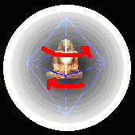 |
| 16.
|
Inhale for a count of six and say to yourself in your mind "HALF THE SPEED OF LIGHT"
Round your lips again and blow for a count of six, spinning and feeling the spin of your pyramids in opposite directions. They will be moving at 1/2 the speed of light.
| |
| 17.
|
Inhale for a count of six and say to yourself in your mind "THREE FOURTHS OF THE SPEED OF LIGHT"
Round your lips again and blow.
As they approach 3/4ths the speed of light, a flat disk located beneath your naval pops out and expands to a distance of approximately 55 feet in diameter. Visualize this like the Sombrero Galaxy as shown in the illustration to the right.
Continue to blow out with force and feel the speed of the disk increase and stabilize.
| 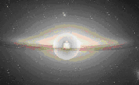 |
| 18.
| Inhale for a count of six and say to yourself in your mind "SPEED OF LIGHT"
Visualize your disk and the pyramids spinning so fast (the speed of light is 186,000 miles per second) they give off intense white light and energy, hold for six and blow for six. This will stabilize the disk.
It is strongly advisable to remain in meditation, meditating upon the energy for 5-15 minutes afterwards, concentrating on feeling the pulsating sensation of the disk.
| 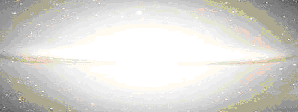 |
Model: Sema-Tawy-Tefnakht, Minister of Pharaoh Psanatik I of Dynasty XXVI; 664 to 610 BCE.
¹ White-gold energy, that of the sun is incredibly powerful. For more information and an interesting read, the book:
"Lost Secrets of the Sacred Ark, Amazing Revelations of the Incredible Power of Gold by Laurence Gardner.
Published London: Element, ©2003. [This is astral gold, not powder as mentioned in the book, but the powers are real].
© Copyright 2005, 2012, Joy of Satan Ministries;
Library of Congress Number: 12-16457